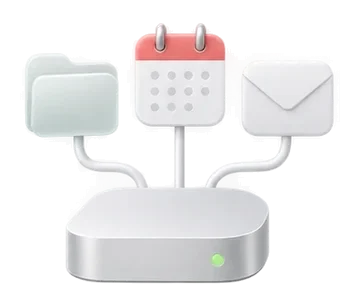
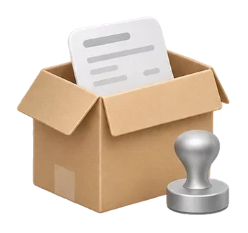
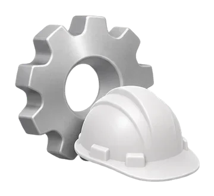
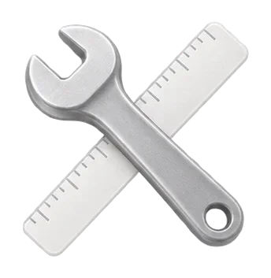

Intégrer l’IA en entreprise
Donner l’IA à vos équipes, ce n’est pas l’intégrer.
J’audite, j’intègre, je forme et je suis les gains, un service à la fois. Vos équipes gagnent des heures chaque semaine, et font ce qu’elles ne savaient pas faire.
Le constat
77 % des ETI utilisent l’IA. Seules 17 % d’entre elles y gagnent du temps.
Le gain
Jusqu’à 7 heures par personne et par semaine. Si l’IA est bien intégrée.
Estimations par personne, selon les métiers. Chez vous, on les mesure pendant l’audit.
Niveau 1
≈ 1 hUn abonnement, sans méthode.Niveau 2
2 à 3 hL’IA utilisée sur les bonnes tâches.
Niveau 3 · une intégration complète
4 à 7 hL’IA branchée sur vos documents et vos outils.Et le temps n’est qu’un des gains.
Ces heures se voient en premier. Le reste arrive ensuite, et va souvent plus loin.
- Du temps gagnéDevis, comptes rendus, relances, recherches : en minutes au lieu d’heures.
 De meilleurs résultatsMoins d’erreurs, des réponses plus rapides, des documents plus soignés.
De meilleurs résultatsMoins d’erreurs, des réponses plus rapides, des documents plus soignés.- Moins de prestatairesVisuels, vidéos, traductions, petits outils : une partie se fait en interne.
- Des équipes qui progressentChacun apprend à confier à l’IA ses propres tâches, et le garde.
- Plus de capacitéLes projets repoussés faute de temps avancent enfin.
- Des tâches automatiséesL’IA trie, classe, préremplit et prépare en continu. L’humain valide.
Le rôle
Un responsable de l’IA, pour tous vos services.
L’IA touche chaque service, et personne n’a le temps de l’installer. Je prends ce rôle chez vous : un service d’abord, puis les autres.
Administration des ventes
Devis et commandes préparés depuis l’email.
Par exempleUne demande arrive par email : le devis est prêt en 2 minutes, l’assistante vérifie les prix et l’envoie.Service client
Chaque réponse proposée, avec sa source.
Par exemple« Où en est ma commande ? » La réponse est proposée avec le suivi du transporteur. Le conseiller valide.Commercial
Les relances prêtes chaque matin.
Par exempleChaque matin, les relances des devis en attente sont prêtes, écrites pour chaque client.Comptabilité
Pièces triées, relances préparées.
Par exempleLes factures reçues sont lues, classées et rapprochées. Le comptable vérifie seulement les écarts.Marketing
Un contenu décliné pour chaque canal.
Par exempleUn article devient un post LinkedIn, une newsletter et trois visuels, dans votre ton.Ressources humaines
Annonces, accueil, réponses aux salariés.
Par exempleUne annonce rédigée en 10 minutes, et les questions des salariés traitées depuis vos règles.Production
Un planning proposé depuis les contraintes.
Par exempleLe planning de la semaine proposé depuis les commandes et les absences. Le responsable ajuste.Direction
La semaine résumée en une page.
Par exempleChaque lundi, une page : les chiffres clés, les alertes, et les décisions à prendre.
Cas concrets
L’IA exécute. L’humain décide.
Six exemples, service par service.

Administration des ventesAvantRecopier la demande de l’email pour faire le devis
Avec l’IALe devis est préparé depuis l’email, l’assistant vérifie les prix
- Service client
AvantChercher la réponse dans la documentation, encore
Avec l’IALa réponse est proposée avec sa source, le conseiller valide
- Commercial
AvantRelancer les devis quand on y pense
Avec l’IALes relances sont prêtes chaque matin, personnalisées
- Comptabilité
AvantRelancer les pièces manquantes une à une
Avec l’IALes relances partent de la liste des pièces, le comptable relit

ProductionAvantFaire le planning à la main
Avec l’IAUn planning proposé depuis les contraintes, le responsable l’ajuste
- Direction
AvantLire tous les rapports pour avoir une vue d’ensemble
Avec l’IAUne synthèse de la semaine : chiffres, alertes, décisions
La méthode
Un service d’abord. Puis les autres.
 01Auditer
01AuditerJe vois comment le service travaille vraiment, et je chiffre le temps à gagner. Un premier gain arrive pendant l’audit.
- 02Intégrer
L’IA entre dans vos outils et vos habitudes : consignes, modèles, automatisations.
- 03Former
Chaque personne apprend sur ses propres tâches. Les formations restent enregistrées.
 04Suivre
04SuivreOn mesure les heures gagnées avec l’équipe, on ajuste, puis on passe au service suivant.

Pourquoi moi
Je l’ai d’abord fait chez moi.
Trois entreprises cofondées, plus de 10 projets clients, plus de 12 000 heures d’IA depuis 2022. Chaque méthode que je vous propose, je l’ai d’abord appliquée à mes propres projets.
 BeeFit
BeeFitL’offre
Le Service Pilote IA. Un service d’abord, jusqu’au bout.

Le Service Pilote IA
L’IA intégrée dans un premier service, de l’audit au suivi. Puis les autres, si vous le décidez.
- De 3 à 12 moisselon le nombre de services
- Un service à la foispour des gains mesurés
- Un seul interlocuteurdu premier appel au bilan
- 1Auditer
- 2Intégrer
- 3Former
- 4Suivre
Vous gardez
- Le rapport d’audit chiffré
- La charte IA de l’entreprise
- Les guides et les formations
- Une ligne directe avec moi
Un atelier d’une journée
Pour commencer petit.
En parler
Un outil sur mesure
Quand il manque un outil.
Construire un produitPour commencer sans risque
- Un premier gain pendant l’auditUne vraie tâche de votre service faite avec l’IA avant le rapport. Sinon, je continue sans la facturer.
- Un objectif écrit, ou le suivi offertOn fixe ensemble un objectif prudent et on le mesure. S’il n’est pas atteint, le suivi continue à mes frais.
- Tout vous appartientComptes, consignes, guides, formations, outils. Vous gardez tout.
Garanties sous conditions, détaillées dans la proposition.
Questions
Vos questions. Mes réponses.
Nos données restent-elles confidentielles ?
Oui. Je signe un accord de confidentialité avant de commencer. On choisit des offres d’IA qui n’apprennent pas sur vos données, et on écrit ensemble ce qui n’y entre jamais : c’est la charte IA de l’entreprise.
Que se passe-t-il si l’IA se trompe ?
Ça arrive, et on s’y prépare. Chaque usage est testé sur de vrais exemples validés par votre équipe. Et tout ce qui part chez un client ou un fournisseur est relu par un salarié : l’IA prépare, l’humain valide.
Mes équipes vont-elles vraiment s’en servir ?
C’est le vrai sujet. Je commence par les tâches qui les fatiguent, avec une personne volontaire. Quand un collègue gagne une heure, les autres suivent. La formation se fait sur leurs vraies tâches, et l’usage est suivi chaque semaine.
Combien de temps cela demande-t-il à mes équipes ?
Pendant l’audit, environ une heure par personne : un questionnaire court et un entretien. Ensuite, des formations courtes sur leurs tâches, et un référent dans le service. Le reste, je m’en occupe.
Combien de temps dure l’accompagnement ?
L’audit prend de trois à quatre semaines. L’intégration d’un premier service dure en général trois mois, puis vient le suivi. En tout, de 3 à 12 mois selon le nombre de services.
Combien coûte un accompagnement ?
Ça dépend de la taille du service et de ce qu’on y installe. On en parle pendant l’appel. Puis vous recevez une proposition écrite, avec le montant, avant de signer quoi que ce soit.
Faut-il des compétences techniques, ou un service informatique ?
Non. Votre équipe apprend sur son travail de tous les jours. S’il faut relier l’IA à un logiciel, je m’en occupe, avec votre prestataire si vous en avez un.
Quelle IA allez-vous utiliser ?
Celle qui convient à vos tâches et à vos règles, souvent celle que vous avez déjà. Je teste chaque nouvel outil avant de le recommander.

On en parle ?
Qui pilote l’IA dans votre entreprise aujourd’hui ?
Réservez 20 minutes. Ou recevez d’abord votre mini-analyse : une page gratuite sous 24 h, sur le service de votre choix.
Ou, pour aller plus loin :